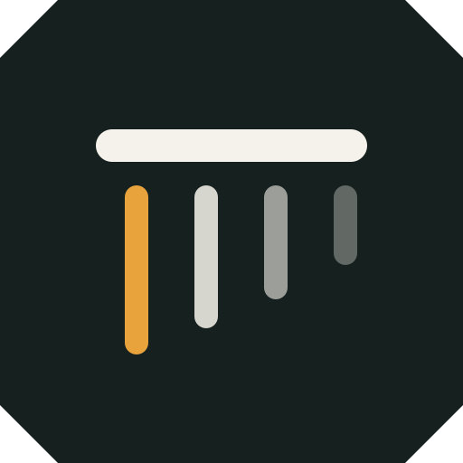
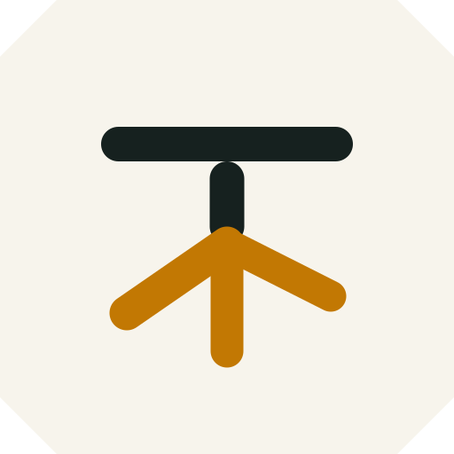
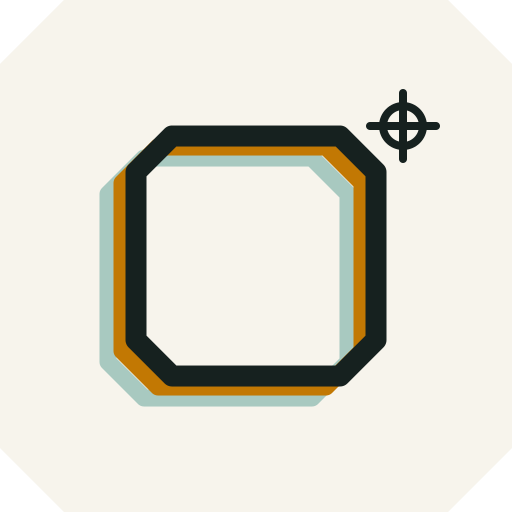
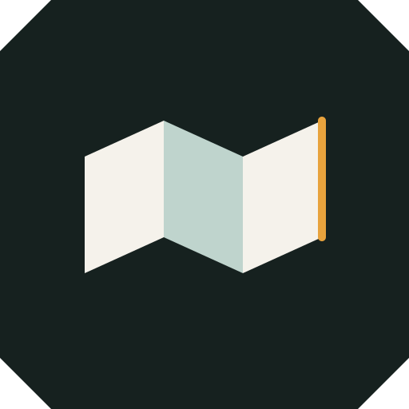

25664
32
A · 一行四道
一条稿线分出四条长短不同的稿轨，直白表达「同一篇，投到长度不同的平台」。最克制，但接近图表语言。
深色底表现稳定

25664
32
B · 一稿分流
横杠加三支不等长分叉，取自「千」的骨架；纸底 + 墨 + 琥珀的印刷配色在小尺寸下辨识度最好。
纸底图标在深色坞里偏亮，需要描边

25664
32
C · 套印偏移
同一块印版压印三次、逐次错位，配一个印刷套准符号。概念最「内行」，但 32px 下层次会糊。
细节依赖大尺寸
推荐
 64
64
 32
32

25664D · 折页
一条纸带反复对折：还是同一张纸，却折出多个面。明暗交替表达同一内容的不同形态，轮廓独特、不撞常见的「叠纸 + 星芒」。
深色底对比最佳